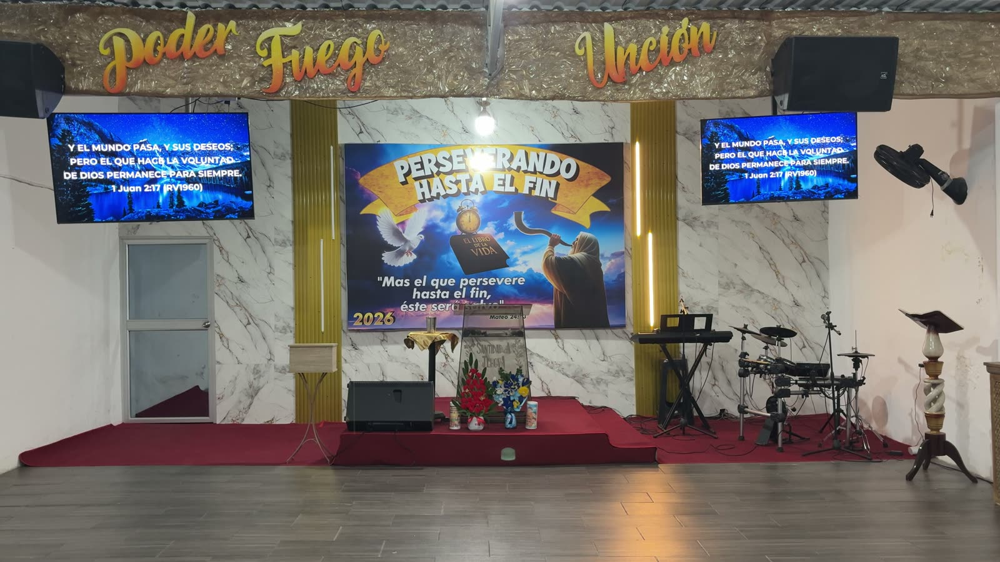
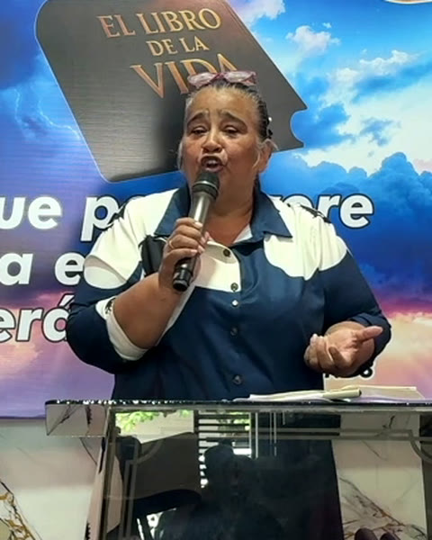

Iglesia Cristiana Camino al Cielo
Somos una iglesia cristiana en Los Patios. Ven a buscar a Dios con nosotros.
Domingo 9:30 a. m. y 5:00 p. m. · martes, jueves y sábado 7:00 p. m.Calle 32 # 2‑35 · La Cordialidad
Somos una iglesia cristiana en Los Patios. Ven a buscar a Dios con nosotros.
Domingo 9:30 a. m. y 5:00 p. m. · martes, jueves y sábado 7:00 p. m.Calle 32 # 2‑35 · La Cordialidad
Mateo 7:14. Lo recorremos juntos, cada semana, con la Palabra de Dios en el centro.
No necesitas conocer a nadie. Escríbenos y te ayudamos a llegar.
Barrio La Cordialidad. Domingo 9:30 a. m. y 5:00 p. m.; martes, jueves y sábado 7:00 p. m.
Ven al que te quede mejor. Si no puedes venir, los transmitimos en vivo por YouTube.
Consultando el próximo culto…
Domingo a las 5:00 p. m.: escuela dominical para los niños mientras los adultos están en el culto.

Vengas de donde vengas, aquí hay un lugar para ti.
El pastor Mario Uribe y la pastora Edilia Toloza guían la iglesia en Los Patios.

Si no pudiste venir, aquí está la Palabra de cada semana. Las nuevas aparecen solas.
Desde la app de tu banco o de Nequi, envía a la llave Bre-B de la iglesia:
@nequilui44Gracias por tu generosidad. Dios bendiga tu siembra.